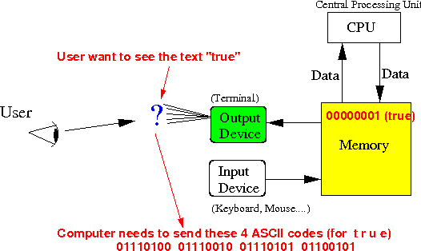

- Recall that:
- The Boolean value false is represented by the binary number 00000000
- The Boolean value
true is
represented by the
binary number 00000001
(See: click here )
- Boolean inputs are
printed out (shown) to the
user(s) by
displaying the
text:
true or: falseProblem:
- When the computer
sends the Boolean values
true (or
false) to
the terminal, it will
send this
code:
00000001 (or 00000000 (false))
The terminal cannot display the ASCII code 00000001 which is an unprintable character (Start of Heading)
The terminal will not display the text true for the Boolean value to the user !!!
- When the computer
sends the Boolean values
true (or
false) to
the terminal, it will
send this
code:
- In other words:
- Internally
(= inside a Java program), the
boolean valuem true is
represented by
the binary number 00000001
When the computer sends the binary number 00000001 to the terminal, the terminal will display an unprintable character - because the code 00000001 represents "Start of Header" in ASCII.
- In order for the
terminal to
display the
text "true",
the computer must
send these ASCII codes to
the terminal:
01110100 01110010 01110101 01100101
 Therefore: we need to convert the internal boolean representation to their (ASCII) representation for output operation also
- Internally
(= inside a Java program), the
boolean valuem true is
represented by
the binary number 00000001
- The Java class Boolean provides
the
toString( ) method to
convert
the
internal "program" representation of
the boolean values to their
"ASCII" representation:
String toString( boolean x ): return a String that represents the boolean value x If x == true, we return the string "true" If x == false, we return the string "false"See: click here
The method toString( ) performs the following translation:
Input Output ---------- ------------- 00000001 ---> "true" 00000000 ---> "false" Note: "true" means: the ASCII codes 01110100 01110010 01110101 01100101 "false" maens: the ASCII codes 01100110 01100001 01101100 01110011 01100101
- Example:
boolean x = true; boolean y = false; String s; s = Boolean.toString(x); // Change to BooleanIO to use my own System.out.println("String for 'true' boolean value = " + s); s = Boolean.toString(y); // Change to BooleanIO to use my own System.out.println("String for 'false' boolean value = " + s);
- Example Program:
(Demo above code)

- Prog file: /home/cs255001/demo/java/Bool2String.java
How to run the program:
- To compile: javac Bool2String.java
- To run: java Bool2String
- The
Boolean.toString( )
method is also
very simple and
I like to use it to
show you a
simple example of
conversion between
2 different representations
This is what the toString( ) method look like:
public static boolean toString( boolean x ) { if ( x == true ) return "true"; // This is a String (= 4 ASCII codes !) else return "false"; // This is a String (= 5 ASCII codes !) }Note:
- The statement return "true" will return a string containing the ASCII codes for the characters 't' 'r' 'u' 'e' !!!
- Example Program:
(Demo above code)
- Program file:
/home/cs255001/demo/java/Bool2String.java
Change Boolean to BooleanIO first !
How to run the program:
- To compile: javac Bool2String.java
- To run: java Bool2String
- Program file:
/home/cs255001/demo/java/Bool2String.java